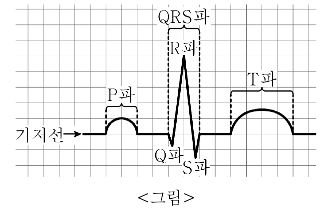
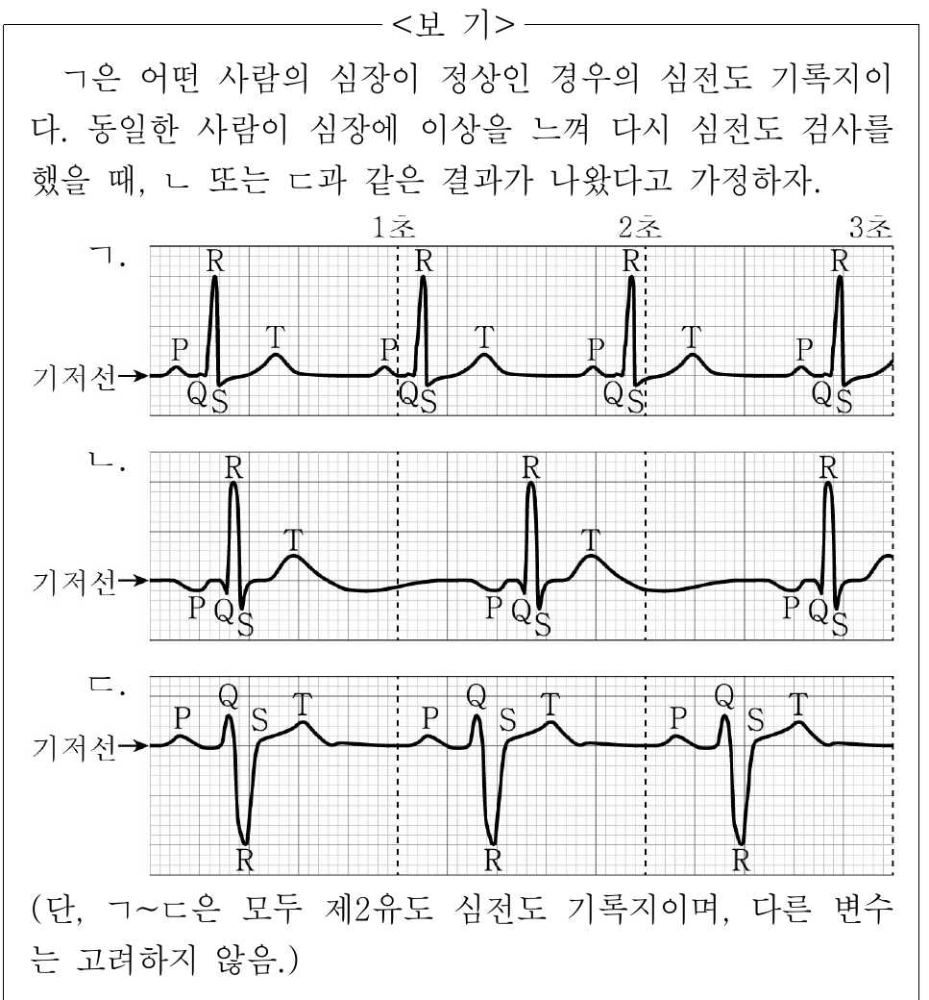
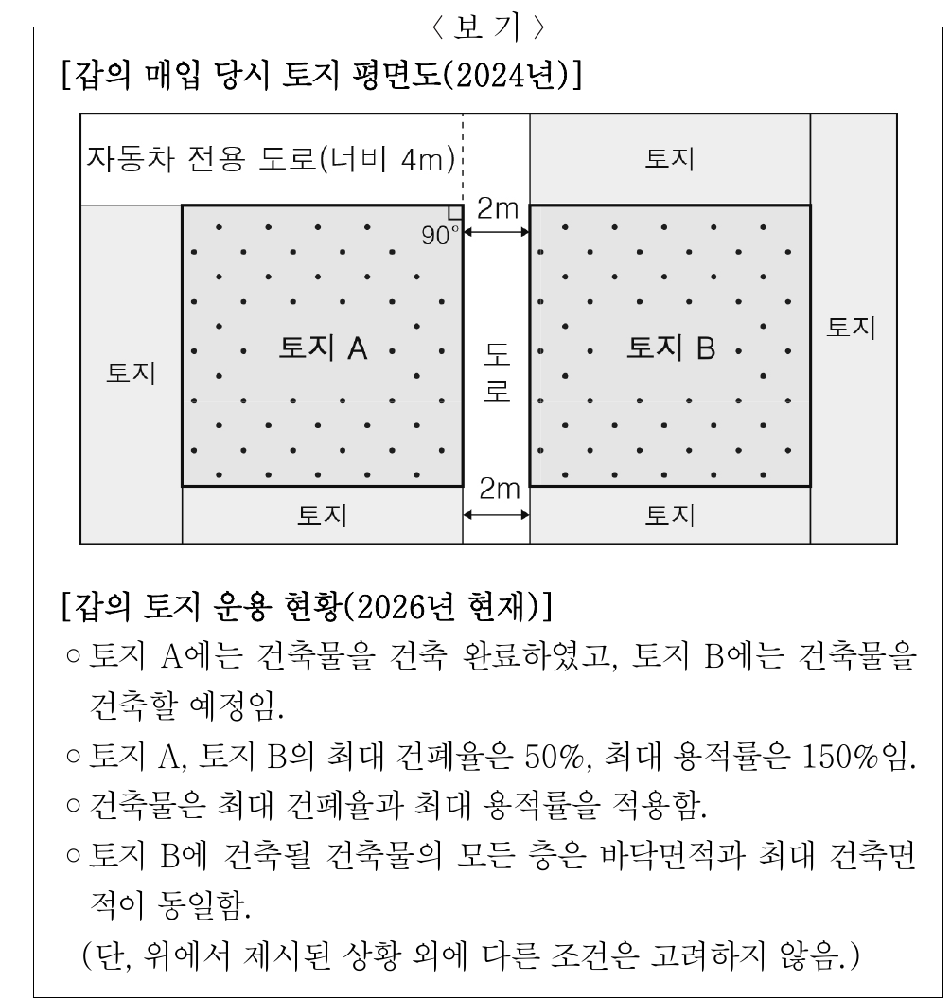

| 읽는 법 | 각 지문: 🎯 주제 → 표의 핵심 문장을 읽고, 가운데 쉬운 말 칸을 손으로 가린 채 무슨 뜻인지 말해 보기 → ⚠ 함정 → O/X → 문제. 오른쪽 내 필기 칸엔 헷갈린 것만. |
|---|---|
| 0~32분 | 김선홍T 영장주의와 강제 처분 (4분) · 체포·구속 적부 심사 (3분) · 도파민과 수의적 운동 (5분) · 수치예보 모델과 경계 조건 (5분) · 호네트와 버틀러의 인정 이론 (5분) · 심전도와 쌍극유도 (7분) · 논증하는 글 쓰기 (3분) |
| 32~57분 | 오홍주T 공모·사모와 상장 법인의 공시 의무 (5분) · 자기 유변 유체 제진 시스템 (4분) · 연합형 게임과 섀플리 값 (4분) · 건축법 (7분) · 인류의 미래에 관한 두 가지 관점 (5분) |
| 57~60분 | 맨 뒤 정답·근거로 채점 → 틀린 O/X는 근거 문단을 앱(원문 탭 🔊 듣기)으로 다시 보기 |
| ¶ | 핵심 문장 (원문에서) | 쉬운 말로 | 내 필기 |
|---|---|---|---|
| 1 | 형사 절차에서 이루어지는 체포나 구속과 같은 강제 처분은 신체의 자유를 제한한다. … 따라서 강제 처분을 행사하기 위해서는 사전에 법관이 발부한 영장을 받는 것을 원칙으로 하는데, 이 원칙을 영장주의라고 한다. | 강제 처분(체포·구속)은 신체의 자유를 제한 → 수사 기관 혼자 결정하면 남용 위험 → 사전에 법관의 영장을 받는 "영장주의" ★ 영장주의가 필요한 "이유"를 묻는다: 수사 기관이 자체적으로 판단하면 권한 남용·인권 침해 위험. | |
| 2 | 영장은 국가의 권한 행사가 합법적인 것이라는 판단을 명시적으로 드러내는 허가 문서이면서, 기본권 제한의 정당성을 사전에 심사했다는 것을 드러내는 표지이기도 하다. … 이 점에서 영장주의는 개인을 보호하는 예방적 통제 장치로 기능한다. | 영장 = ① 합법 판단을 드러내는 허가 문서 + ② 기본권 제한의 정당성을 사전 심사했다는 표지 → 영장주의는 예방적 통제 장치 ★ "예방적" = 사전에(일이 벌어지기 전에) 막는다. 적부 심사(사후)와 대비해서 출제되기 좋다. | |
| 3 | 영장주의가 모든 사안에 항상 적용되는 것은 아니다. … 이때 강제 처분에 대한 법원의 판단은 사전 승인이 아닌 사후 검증의 성격을 띠게 된다. | 체포는 원칙적으로 영장 필요, 하지만 긴급 체포·현행범 체포는 영장 없이 가능 → 이때 법원 판단은 사후 검증 ★ 영장주의의 "예외"가 있는 것은 체포뿐. 예외에서 법원 판단의 성격(사전 승인 → 사후 검증)이 바뀐다. | |
| 4 | 구속은 체포와 달리 신체의 자유를 장기간에 걸쳐 전면적으로 제한하는 강력한 조치이므로 예외 없이 영장주의가 적용된다. … 따라서 수사 기록의 검토와 함께 법관이 피의자를 심문하여 구속 여부를 판단하는 영장 실질 심사가 도입되었다. … 이는 범죄 혐의의 상당성, 도주나 증거 인멸의 위험과 같은 구속 요건을 검증하는 절차를 강화함으로써 구속 영장이 발부되는 문턱을 과거보다 실질적으로 높인 장치라 할 수 있다. | 구속은 장기간·전면적 제한이라 예외 없이 영장주의 적용. 수사 기록만 보던 과거 → 피의자 심문까지 하는 영장 실질 심사 도입 → 구속 영장 문턱 ↑ ★ 영장 실질 심사 = 수사 기록 검토 + 피의자 심문 (둘 다!). 법원은 정해진 기일 내 "반드시" 심문. |
| 체포 | 구속 | |
|---|---|---|
| 성격 | 신체를 일시적으로 확보 | 장기간·전면적 제한 |
| 영장주의 | 원칙 적용, 예외 있음 | 예외 없이 적용 |
| 예외 | 긴급 체포, 현행범 체포 | 없음 |
| 법원 판단 | 예외 시 사후 검증 | 영장 실질 심사(피의자 심문) |
| ¶ | 핵심 문장 (원문에서) | 쉬운 말로 | 내 필기 |
|---|---|---|---|
| 1 | 적부 심사는 체포되거나 구속된 개인이 그 처분이 법적으로 정당한지에 대한 심사를 법원에 청구할 수 있는 제도이다. … 이는 형사 절차 중에 행하여진 강제 처분이 적법한 절차를 따랐는지와 실질적으로 필요했는지를 점검하기 위한 것이다. … 체포 또는 구속이 이루어진 시점은 이미 개인에 대한 국가의 강제력이 행사된 상태이지만, 적부 심사는 그 효력이 유지될 수 있는지를 판단하도록 하여 국가의 권한을 제도적으로 견제한다. | 적부 심사 = 체포·구속된 개인이 처분의 정당성 심사를 법원에 청구 → 적법 절차 + 실질적 필요 점검 → 효력 유지 여부 판단으로 국가 권한 견제 ★ 영장(사전)과 달리 적부 심사는 "이미 행사된" 강제 처분을 대상으로 한다 (사후). | |
| 2 | 적부 심사의 청구권자는 피의자 본인뿐 아니라 그 변호인, 법정 대리인, 친족, 동거인 또는 고용주까지 폭넓게 인정된다. … 청구서가 접수되면 법원은 48시간 내에 체포 혹은 구속된 피의자를 심문해야 한다. … 그리고 증거의 적법성과 피의자의 진술 등을 심사하여 강제 처분이 유지될 필요가 있는지를 판단한다. | 청구권자 폭넓음(피의자·변호인·법정 대리인·친족·동거인·고용주) — 피의자가 방어권 행사가 어렵기 때문. 접수 후 48시간 내 심문, 수사 기관·변호인·청구권자 참여 가능. 법관은 절차 적법성, 법률상 요건, 증거 적법성·진술을 심사 → 유지 필요성 판단 ★ 청구권자를 넓게 인정한 "이유" = 피의자가 실제로 방어권을 행사하기 어려움. 심문 기한 48시간 (숫자 선지). | |
| 3 | 구속 적부 심사에서는 영장 발부가 적법했더라도 이후 상황에서 피의자의 도주 또는 증거 인멸의 위험이 사라졌다면, 법원은 피의자의 석방을 결정하고 피의자는 불구속 상태에서 수사받게 된다. … 이는 영장 발부라는 일회적 판단이 강제 처분의 정당성을 지속적으로 담보할 수 없다는 점을 제도적으로 반영한 결과이다. … 즉 강제 처분은 합법적인 권력 행사이지만, 적부 심사는 강제 처분이 이루어진 이후 그 효력의 유지 여부를 판단하는 절차라는 점에서 강제 처분에 대한 사법적 통제가 다양한 시점에서 이루어진다는 것을 보여 준다. | 영장 발부가 적법했어도 이후 도주·증거 인멸 위험이 사라지면 석방 → 불구속 수사. 영장이라는 일회적 판단은 정당성을 지속적으로 담보 못함 → 사법적 통제는 다양한 시점에서 ★ 핵심 추론: 영장이 "적법하게" 발부되었어도 석방될 수 있다! (상황이 변하면) |
| 영장 (영장주의) | 적부 심사 | |
|---|---|---|
| 시점 | 강제 처분 전 (사전) | 강제 처분 후 (사후) |
| 누가 시작? | 수사 기관이 청구 | 피의자 등 청구권자가 청구 |
| 판단 대상 | 강제 처분을 해도 되는가 | 효력을 계속 유지해도 되는가 |
| 기능 | 예방적 통제 | 제도적 견제(사후 통제) |
| ¶ | 핵심 문장 (원문에서) | 쉬운 말로 | 내 필기 |
|---|---|---|---|
| 1 | 도파민은 운동 조절, 보상 및 동기 부여 등에 관여하는 신경 전달 물질로 뇌에 존재하는 도파민성 뉴런에서 합성된다. … 음식이나 약물로 도파민을 섭취할 수 있으나 이렇게 체내로 유입된 도파민은 혈액-뇌 장벽을 통과할 수 없다. … 따라서 도파민성 뉴런에서 합성된 도파민만이 뇌의 신경 경로를 따라 이동하며 신경 전달 물질로 작용할 수 있다. | 도파민: 운동·보상·동기 관여. 섭취한 도파민은 혈액-뇌 장벽 통과 X → 뉴런에서 합성된 것만 작용. 티로신 →(효소) 레보도파 →(효소) 도파민 → 시냅스 소포 저장 → 활성화 시 분비 → 시냅스 후 뉴런 수용체 결합 ★ 합성 "순서"(티로신 → 레보도파 → 도파민)와 각 단계에 "효소"가 필요하다는 점. 시냅스 전 = 분비하는 쪽, 후 = 받는 쪽. | |
| 2 | 도파민 수용체는 두 가지 계열로 나뉘는데 D1 계열은 뉴런 내 신호 전달의 활성을 유도하는 흥분성 수용체로, D2 계열은 뉴런 내 신호 전달의 활성을 억제하는 억제성 수용체로 작용한다. … 이 중 D2 계열 수용체는 시냅스 후 뉴런뿐만 아니라 시냅스 전 뉴런인 도파민성 뉴런에도 위치할 수 있다. … 도파민성 뉴런에 있는 D2 계열 수용체를 자가 수용체라고 하는데, 여기에 시냅스 틈으로 분비된 도파민이 결합하면 도파민성 뉴런 내 신호 전달의 활성화가 억제되어 도파민 분비가 중단된다. | D1 = 흥분성, D2 = 억제성. D2는 시냅스 전(도파민성) 뉴런에도 있을 수 있음 = 자가 수용체 → 도파민 결합 시 분비 중단(스스로 조절). 일부 도파민은 DAT로 재흡수 → 재사용 or 뉴런 안 분해. DAT 없으면 뉴런 밖에서 분해 ★ 자가 수용체의 작동 = 음성 피드백(많이 분비 → 분비 중단). DAT 유무에 따라 "분해 장소"가 달라짐(안/밖). | |
| 3 | 수의적 운동은 기저핵에서 선조체와 내측 창백핵을 연결하는 두 가지 신경 경로가 상호 보완적으로 기능하면서 조절된다. … 선조체 뉴런과 내측 창백핵 뉴런은 억제성 신경 전달 물질인 가바를 합성하는 가바성 뉴런이다. … 이로 인해 시상으로 가바가 분비되지 않으면 시상의 글루타메이트성 뉴런이 억제 상태에서 벗어나 활성화되면서 대뇌 피질의 운동 영역으로 흥분성 신경 전달 물질인 글루타메이트가 분비되어 운동이 시작된다. | 수의적 운동 = 기저핵의 선조체–내측 창백핵 두 경로가 상호 보완. 둘 다 가바(억제)성 뉴런. 직접: 선조체 활성 → 창백핵 억제 → 시상 억제 풀림 → 글루타메이트 → 운동 시작. 간접: 선조체 활성 → (다른 부위) → 창백핵에 글루타메이트 → 창백핵 활성 → 시상 억제 → 운동 차단 ★ "억제를 억제하면 활성" — 이중 부정 논리. 직접 경로에서 창백핵이 억제되면 시상은 풀려나 활성화된다. | |
| 4 | 흑질의 도파민성 뉴런은 선조체로 연결되어 직접 및 간접 경로를 통해 수의적 운동의 조절에 영향을 미친다. … 직접 경로의 선조체 뉴런에는 D1 계열 수용체가, 간접 경로의 선조체 뉴런에는 D2 계열 수용체가 밀집되어 있다. … 따라서 흑질의 도파민성 뉴런에서 분비된 도파민은 직접 경로를 활성화하고 간접 경로는 억제하여 목표하는 운동의 시작을 수월하게 함으로써 운동을 촉진하게 된다. | 흑질 도파민성 뉴런 → 선조체. 직접 경로 선조체엔 D1(흥분), 간접 경로 선조체엔 D2(억제) → 도파민은 직접 경로 활성 + 간접 경로 억제 → 둘 다 운동 촉진 ★ <보기>로 파킨슨병(흑질 도파민 감소)이 잘 나온다 → 직접 경로 활성 ↓, 간접 경로 억제 ↓(=간접 경로가 더 작동) → 운동 시작 어려움. |
| 직접 경로 | 간접 경로 | |
|---|---|---|
| 선조체 수용체 | D1 (흥분성) | D2 (억제성) |
| 내측 창백핵 | 가바 받아 억제됨 | 글루타메이트 받아 활성화 |
| 시상 | 억제에서 벗어나 활성 | 가바 받아 억제 |
| 결과 | 운동 시작 | 운동 차단 |
| 도파민의 효과 | 경로 활성화 | 경로 억제 → 결국 운동 촉진 |
| ¶ | 핵심 문장 (원문에서) | 쉬운 말로 | 내 필기 |
|---|---|---|---|
| 1 | 이러한 변화를 예측하기 위해 수치예보가 활용되는데, 수치예보는 대기의 운동과 변화를 설명하는 복잡하고 방대한 방정식들을 슈퍼컴퓨터로 계산하여 미래의 대기 상태를 모의하고 기상 현상을 예측하는 일련의 과정이다. … 이때 모의한다는 것은 방정식들의 근사해를 구하여 미래의 대기 상태를 도출하는 것을 의미한다. … 수치예보를 위해서는 슈퍼컴퓨터로 수치예보 모델을 가동하는데, 수치예보 모델을 가동하는 목적에 따라 모의할 대기의 영역을 정한 후 그 영역을 격자 단위로 세분화한다. | 수치예보 = 방정식을 슈퍼컴퓨터로 계산해 미래 대기 상태를 모의(근사해 도출)하고 예측. 목적에 따라 영역 결정 → 격자로 세분화 ★ 모의 = "근사해"(정확한 해 X). | |
| 2 | 수평 방향의 해상도는 격자점 간 거리가 좁을수록 높고, 연직 방향의 해상도는 연직 방향의 층수가 많을수록 높다. … 대기를 모의하는 정도는 분해능으로 나타내는데, 분해능은 시공간적으로 대기 상태를 얼마나 세밀하게 모의할 수 있는지를 나타내는 척도이다. … 공간분해능은 격자점 간 거리로, 시간분해능은 시간 간격으로 나타내며, 각각의 값이 작을수록 분해능이 높다. | 연직(층) × 수평(위도·경도 격자) → 육면체 공기 덩이. 수평 해상도: 격자점 간 거리 좁을수록↑, 연직 해상도: 층수 많을수록↑. 분해능 = 얼마나 세밀하게 모의하는지. 공간분해능 = 격자점 간 거리, 시간분해능 = 시간 간격 → 값이 작을수록 분해능↑ ★ "분해능의 값이 작다 = 분해능이 높다" 역관계! 계산 문제에서 자주 함정. | |
| 3 | 일반적으로 수평 방향의 공간분해능을 대기의 최대 속도로 나눈 값을 시간분해능의 상한선으로 둔다. … 이는 대기가 정해진 시간 간격 동안 격자점 간 거리보다 더 멀리 이동하게 되면 변수의 값을 구할 수 없는 격자점이 생기기 때문이다. … 또한, 일반적으로 모델에 이미 설정된 수평 방향의 공간분해능을 두 배로 높이면 계산의 안정성을 위해 연직 방향의 공간분해능과 시간분해능도 각각 두 배로 높인다. | 시간분해능 상한선 = 수평 공간분해능 ÷ 대기 최대 속도 (대기가 한 시간 간격에 격자 간격보다 멀리 가면 값을 못 구하는 격자점이 생김). 수평 분해능 2배 → 연직·시간도 2배 → 계산량 2⁴ = 16배 ★ 예: 격자 간격 10 km, 최대 속도 100 m/s → 시간 간격 상한 100초. 수평은 x, y 두 축이라 2배씩(2×2), 연직 2, 시간 2 → 16. | |
| 4 | 시간에 대한 초기 조건 설정은 모의를 시작하는 시점에서의 대기 상태를 설정하는 것으로, 격자점마다 대기 상태를 나타내는 변수의 값을 개별적으로 부여한다. … 공간에 대한 경계 조건 설정은 모의 영역의 하단, 상단, 측면 경계에서의 대기 상태를 설정하는 것으로, 여기에는 대기와 에너지의 상호작용 및 대기의 이동 등이 반영된다. … 먼저, 하단 경계에서는 대기가 지표면을 통과할 수 없기 때문에 대기의 연직 운동이 없다고 가정한다. | 초기 조건(시간) = 시작 시점 대기 상태, 격자점마다 개별 부여. 경계 조건(공간) = 하단·상단·측면. 하단: 연직 운동 0 가정, 그러나 지표면 에너지(열·수증기) 흐름 반영 ★ 하단: 연직 운동 없다고 "가정"하되 에너지 흐름은 "반영". | |
| 5 | 상단 경계에서는 고도가 높아질수록 대기의 연직 운동이 약해지고 상향 전파되는 에너지가 점차 줄어드는 특성을 고려한다. … 이에 따라 최상층 고도에서 대기의 연직 운동이 없다고 가정하고 연직 속도를 0으로 설정하는데, 이렇게 하면 영역 외부로 빠져나가야 할 에너지가 최상층에서 반사되어 영역 내부로 되돌아오는 것으로 모의된다. … 이를 완화하기 위해 일반적으로 영역 내부에 감쇠층을 두어 에너지가 감쇠층에서 흡수되도록 계산하는 방법과 상향 전파되는 에너지가 자연스럽게 흩어지도록 계산하는 방법을 함께 적용한다. | 상단: 고도↑ → 연직 운동·상향 에너지↓ → 최상층 연직 속도 0 → 에너지가 반사되어 내부로 → 에너지 비현실적 증가, 왜곡 → 완화: 감쇠층(흡수) + 자연스럽게 흩어지게. 80 km 이상이면 후자(흩어짐), 낮으면 전자(감쇠층)가 주요 ★ "전자/후자" 지시 대상 정확히: 전자 = 감쇠층 흡수, 후자 = 자연스럽게 흩어짐. 높으면 후자! | |
| 6 | 측면 경계에 대한 조건은 제한된 영역의 대기 현상을 모의하는 모델인 지역 모델에서 설정한다. … 이 때문에 지역 모델은 지구 전체의 대기 현상을 모의하는 모델인 전지구 모델에서 자료를 제공받아 측면 경계 조건으로 활용한다. … 이는 지역 모델과 상위 모델인 전지구 모델 간에, 대기 상태를 나타내는 변수의 값이 불일치하는 정도를 최소화하기 위한 것이다. | 측면 경계는 지역 모델에서 설정. 모든 층에서 유출입 → 외부 값 반영 필요 → 전지구 모델 자료를 받아 측면 경계 조건으로 → 두 모델 간 불일치 최소화 ★ 전지구 모델은 지구 전체라 측면 경계가 없다 → 측면 경계 조건은 "지역 모델"에서만. |
| 경계 | 가정/특성 | 문제·보완 |
|---|---|---|
| 하단 | 대기가 지표면 통과 불가 → 연직 운동 없음 | 지표면 에너지 교환(열·수증기) 반영 |
| 상단 | 최상층 연직 속도 0 | 에너지 반사·증가 → 감쇠층 흡수 + 자연 흩어짐 |
| 측면 | 모든 층에서 유출입 | 전지구 모델 자료로 외부 값 반영 |
| ¶ | 핵심 문장 (원문에서) | 쉬운 말로 | 내 필기 |
|---|---|---|---|
| 1 | 호네트는 개인의 행복한 삶을 위해서는 사회적 관계에서 이루어지는 인정이 필요하다고 주장한다. … 그에 따르면 인정은 개인의 정체성에 대한 존중을 의미하며, 개인의 정체성은 '목적격 나'에 대한 '주격 나'의 반응에 의해 형성된다. … '목적격 나'는 규범에 의해 요구되는 정체성이 추상화된 자아이며, '주격 나'는 개인이 태어날 때부터 갖는 고유의 자아이다. | 호네트: 행복한 삶에 인정이 필요. 인정 = 정체성에 대한 존중. 정체성 = 목적격 나(규범이 요구하는 추상화된 자아)에 대한 주격 나(타고난 고유 자아)의 반응. 받아들이면 → 내면화 → 규범 수용 → 인정 ★ 목적격 나 = "규범" 쪽, 주격 나 = "타고난" 쪽. 헷갈리게 바꿔 낸다. | |
| 2 | '주격 나'가 '목적격 나'에 반발하는 경우 개인은 대안적 정체성을 형성한다. … 대안적 정체성은 규범에 부합하지 않기 때문에, 이때 개인은 사회로부터 인정받지 못하고 부정적 자기의식을 갖게 된다. … 또한 규범에 대해 비판적 태도를 보이며 저항하기도 하는데, 정체성의 인정을 위한 이러한 저항을 인정 투쟁이라 한다. | 반발 → 대안적 정체성 → 규범에 부합 X → 인정 못 받음, 부정적 자기의식 → 비판·저항 = 인정 투쟁 → 성공 시 규범 변화 + 대안적 정체성 인정 → 사회 발전 ★ 호네트는 인정 투쟁에 "긍정적"(사회 발전) — 버틀러는 "또 다른 배제"를 남긴다고 봄. 두 관점 비교가 핵심. | |
| 3 | 버틀러는 규범이 고정된 실체로서 정체성 형성의 기준으로 작동한다는 호네트의 주장을 비판하면서 수행성의 개념을 통해 규범과 정체성의 관계를 설명한다. … 수행성이란 수행에 의해 대상이 구성되는 성질이다. … 규범이 수행성을 지녔다는 것은 수행이 규범을 구성한다는 것으로, 규범이 수행에 선행하여 존재하는 실체를 가진 것이 아니라 수행의 반복에 의해 형성되고 유지되거나 약화되고 사라지는 유동적인 것임을 뜻한다. | 버틀러: 규범 = 고정된 실체라는 호네트 비판 → 수행성(수행에 의해 대상이 구성). 규범은 수행에 선행하는 실체가 아니라 반복으로 형성·유지·약화·소멸하는 유동적인 것. 정체성도 수행적 반복의 효과(수행성). 규범을 반복하며 구성원으로 인정받는다고 "느낀다" ★ 호네트 vs 버틀러의 규범관: 고정된 실체(먼저 존재) vs 수행이 만든 유동적인 것(나중에 구성). | |
| 4 | 버틀러에 따르면 사회 구성원으로 인정받는다는 것은 인간 생존의 가장 근본적인 조건이다. … 그런데 수행적 반복의 실천은 매번 다른 시공간을 배경으로 하기 때문에 동일성이 보장되지 않으며, 개인이 이 차이를 의식하고 자신이 배제되었음을 느끼는 순간 생존 투쟁으로서의 인정 투쟁이 시작된다. … 이때 인정 투쟁은 규범이 사회 구성원에게 부여하는 동일성에 복종하고자 하는 형태로 나타나거나, 규범을 주도하는 권력이나 규범을 작동시키는 진리 체제에 의문을 제기함으로써 차이를 내세우며 저항하는 형태로 나타난다. | 인정 = 생존의 가장 근본 조건. 수행적 반복은 매번 다른 시공간 → 동일성 보장 X → 차이 의식·배제 느낌 → 생존 투쟁으로서의 인정 투쟁. 형태: ① 동일성에 복종 ② 권력·진리 체제에 의문 제기하며 차이를 내세워 저항 ★ 버틀러의 인정 투쟁 시작 원인 = "차이를 의식하고 배제되었음을 느끼는 순간". 호네트(목적격 나에 반발)와 비교. | |
| 5 | 인정 투쟁은 사회 구성원으로서의 인정을 위한 것이지만, 인정 투쟁의 성공은 기존의 배제를 완전히 해체하지 못하고 필연적으로 또 다른 배제의 잔존으로 이어진다. … 사회 구성원에게 동일성을 부여하는 규범을 작동시키는 진리 체제는 이러한 규범에 벗어나는 존재를 상정함으로써 동일성을 확인하기 때문이다. … 정체성의 형성과 규범의 작동이 수행적 반복을 통해 쌍방향적으로 이루어지며 인정과 배제의 경계를 끊임없이 시험할 때 배제는 최소화되고 상호 인정의 윤리가 작동하는 사회를 만들 수 있다고 버틀러는 주장한다. | 인정 투쟁이 성공해도 배제는 완전히 해체 X → 또 다른 배제 잔존 (진리 체제는 규범에서 벗어나는 존재를 상정해야 동일성을 확인하므로). → ㉠ 규범에 저항 + 자신의 진리 체제에도 의문. 정체성 형성과 규범 작동이 쌍방향으로, 인정·배제 경계를 끊임없이 시험 → 배제 최소화, 상호 인정의 윤리 ★ ㉠의 이유: 인정 투쟁의 주체 역시 자기 진리 체제로 누군가를 배제할 수 있기 때문 → 인정과 배제의 순환을 끊기 위해. |
| 호네트 | 버틀러 | |
|---|---|---|
| 규범 | 고정된 실체, 정체성 형성의 기준 | 수행의 반복으로 형성·유지·약화·소멸하는 유동적인 것 |
| 정체성 | 목적격 나에 대한 주격 나의 반응 | 수행적 반복의 실천이 만든 효과 |
| 인정 투쟁의 계기 | 주격 나가 목적격 나에 반발 → 대안적 정체성 | 차이를 의식하고 배제되었음을 느낄 때 |
| 인정 투쟁의 결과 | 성공 → 규범 변화, 대안적 정체성 인정, 사회 발전 | 성공해도 또 다른 배제 잔존 |
| 지향 | 인정을 통한 행복한 삶, 사회 발전 | 진리 체제에도 의문 → 상호 인정의 윤리 |
| ¶ | 핵심 문장 (원문에서) | 쉬운 말로 | 내 필기 |
|---|---|---|---|
| 1 | 심장을 수축시키는 전기 자극은 심방의 가장 오른쪽 위에 있는 동방결절에서 생성되어 심방을 거쳐 심장 아랫부분인 심실로 전달되며, 역할을 다한 전기 자극은 소멸한다. … 정상적인 탈분극은 전체적으로 심장의 오른쪽 위에서 왼쪽 아래로 진행된다. | 동방결절(심방 오른쪽 위)에서 생성된 전기 자극 → 심방 → 심실 → 소멸. 분극(자극 없음) → 탈분극(전기 흐름, 수축) → 재분극(다시 분극, 이완). 정상 탈분극 방향: 오른쪽 위 → 왼쪽 아래 ★ "오른쪽 위 → 왼쪽 아래"는 3문단 제2유도(오른팔 −, 왼다리 +)와 결합되어 "정상이면 양성 편향"의 근거가 된다. | |
| 2 | 심전도는 이와 같은 전기 활동으로 생기는 전위차, 즉 전압을 시간의 흐름에 따라 파형으로 표현하여, 심장 내 전기 자극의 생성과 흐름, 소멸을 기록한 것이다. … 심전도는 P파, QRS파, T파로 이루어지며, 심전도의 가로축은 시간, 세로축은 전압을 나타낸다. | 심전도 = 전위차(전압)를 시간에 따라 파형으로 → 전기 자극의 생성·흐름·소멸 기록. 가로축 = 시간, 세로축 = 전압 ★ 가로 폭 = 걸린 시간, 세로 폭 = 전압 크기. 이 해석 틀로 18·20번을 푼다. | |
| 3 | 전극을 부착하고자 하는 두 위치가 신체의 위아래로 나뉠 때는 양극(+) 전극을 아래쪽에, 좌우로 나뉠 때는 양극 전극을 왼쪽에 부착한다. … 만약 두 전극의 극성을 바꾸어 부착하면 파형이 심장의 실제 상태와 다르게 기록될 수 있어 주의가 필요하다. … 심전도는 양극 전극을 기준으로 파형을 기록하는데, 탈분극의 진행 방향이 양극 전극을 향하면 기저선보다 위를 향하는 양성 편향 파형, 음극 전극을 향하면 기저선보다 아래를 향하는 음성 편향 파형이 기록된다. | 유도 = 전극의 조합. 쌍극유도 = 왼팔·오른팔·왼다리 중 두 곳 사이 전압. 양극 위치: 위아래면 아래, 좌우면 왼쪽. 극성 바꾸면 실제와 다르게 기록. 탈분극이 양극 쪽으로 → 양성 편향, 음극 쪽으로 → 음성 편향. 제2유도: 오른팔(−), 왼다리(+) → 정상이면 모두 양성 편향 ★ 19번: 왼팔·왼다리 → 위아래 → 양극은 아래(왼다리). 오른팔에 양극 → 규칙 위반(오른팔은 좌우·위아래 어느 쪽이든 양극 자리 아님). | |
| 4 | 심전도에서 둥근 언덕 모양의 ㉠ P파는 심방의 탈분극을 나타내며, P파의 가로 폭은 전기가 우심방에서 좌심방까지 도달하는 데 걸리는 시간을 뜻한다. … P파 시작점에서 P파 이후 기록되는 QRS파 시작점까지의 간격을 통해 심방의 탈분극이 심실로 전달되기까지의 시간을 확인할 수 있다. | ㉠ P파 = 심방의 탈분극. 가로 폭 = 우심방→좌심방 도달 시간. P파 시작~QRS 시작 간격 = 심방 → 심실 전달 시간 ★ 20번 ④: P 시작~QRS 시작 간격이 넓다 → 심방에서 심실로 전달되는 시간이 오래 걸림. | |
| 5 | 심전도에서 가장 높고 뾰족하게 기록되는 ㉡ QRS파는 심실의 탈분극을 나타낸다. … QRS파는 Q파, R파, S파로 구성된 복합체지만 이 중 일부 파형만 기록되는 경우가 있으며, R파가 양성 편향이면 QRS파도 양성 편향이라고 본다. … 심실은 심근세포가 거의 동시에 활성화되어 심실 전체의 탈분극 시간이 짧기 때문에 QRS파의 가로 폭은 좁은 형태로 기록된다. | ㉡ QRS파 = 심실의 탈분극. Q·R·S 중 일부만 기록될 수도 있음. R파 양성이면 QRS도 양성. 심근세포 거의 동시 활성 → 가로 폭 좁음. 근육 양 많아 전압 높음 → 세로 폭 김. R–R 간격 = 심박 빠르기 ★ 17번 정답 ③: "항상 세 개가 함께 기록" (X) → 일부만 기록될 수 있다. 20번 ③: QRS 가로 폭 넓음 → 심실 탈분극 시간이 길어짐. | |
| 6 | QRS파 이후 심전도에 다시 둥근 언덕 모양의 파형이 기록되는데, 이는 심실의 재분극을 나타내는 ㉢ T파이다. … 재분극은 탈분극보다 많은 시간이 소요되어 T파의 가로 폭은 QRS파에 비해 넓게 기록되며, 정상적인 T파의 편향은 QRS파와 일치한다. | ㉢ T파 = 심실의 재분극. 재분극이 탈분극보다 오래 걸림 → T파 가로 폭이 QRS보다 넓음. 정상 T파의 편향은 QRS와 일치 ★ 18번 정답 ③: 탈분극 시간 < 재분극 시간 → ㉡이 ㉢보다 가로 폭이 좁다. |

| 파형 | 나타내는 것 | 가로 폭 | 세로 폭/편향 |
|---|---|---|---|
| P파 ㉠ | 심방의 탈분극 | 우심방→좌심방 도달 시간 | 정상 제2유도: 양성 |
| QRS파 ㉡ | 심실의 탈분극 | 좁음 (거의 동시 활성) | 가장 높음 (전압 높음) |
| T파 ㉢ | 심실의 재분극 | QRS보다 넓음 (오래 걸림) | QRS와 같은 편향 |

| ¶ | 핵심 문장 (원문에서) | 쉬운 말로 | 내 필기 |
|---|---|---|---|
| 1 | 논증은 설득을 목적으로 정당한 근거나 일반적인 원리를 들어 주장을 펼치는 것을 말한다. … 설득 전략에는 이성과 논리에 근거하여 독자를 설득하는 이성적 설득 전략, 독자의 감성과 공감을 이끌어 내어 설득하는 감성적 설득 전략, 필자의 성품이나 행동에 대한 신뢰성을 기반으로 설득하는 인성적 설득 전략 등이 있다. | 논증 = 설득 목적 + 정당한 근거·일반적 원리 + 주장. 설득 전략 3가지: 이성적(이성·논리), 감성적(감성·공감), 인성적(필자의 성품·행동에 대한 신뢰성) ★ 사례를 주고 어떤 설득 전략인지 고르게 한다. 생각 틔우기의 생방송: 의학 박사 출연(인성적), 성분 함유 설명(이성적), "매진 임박·한정판"(감성적). | |
| 2 | 설득 전략의 활용은 논증하는 글 쓰기의 주요한 관습이다. … 논증하는 글에는 기본적으로 이성적 설득 전략이 주로 사용되지만, 필요에 따라 감성적 설득 전략이나 인성적 설득 전략 등이 적절하게 사용될 수 있다. … 이때, 설득 전략은 타당한 논거의 수집과 선별, 논증 요소의 관계를 고려한 내용 조직, 그리고 다양한 표현 전략 활용 등으로 구체화될 수 있다. | 설득 전략 활용은 논증하는 글의 주요 관습. 기본은 이성적, 필요에 따라 감성적·인성적. 설득 전략은 ① 논거 수집·선별 ② 논증 요소 관계를 고려한 내용 조직 ③ 표현 전략으로 구체화 ★ 교과서 그림: 논증의 설득 전략 = 타당한 논거 수집과 선별 + 논증 요소의 관계를 고려한 내용 조직 + 다양한 표현 전략 활용. | |
| 3 | 논증에서 가장 중요한 것은 논거이다. … 논거는 주장을 뒷받침하는 객관적인 근거를 말한다. … 논거에는 역사적 사실이나 실험 결과, 통계 수치와 같은 사실 논거와 전문가의 의견이나 일반적 여론, 상식과 같은 의견 논거가 있다. | 논증에서 가장 중요한 것 = 논거(주장을 뒷받침하는 객관적 근거). 사실 논거(역사적 사실, 실험 결과, 통계 수치) / 의견 논거(전문가 의견, 일반적 여론, 상식) ★ 예시를 사실/의견 논거로 분류. "전문가의 의견"은 사실 논거가 아니라 의견 논거! | |
| 4 | 논증하는 글을 쓰려면 논제에 관한 쟁점을 파악하고 필자의 관점을 정립해야 한다. … 그런 뒤에는 서적, 신문, 방송, 인터넷 등의 매체를 활용하여 다양한 자료를 수집하고, 그중 주장의 설득력을 높일 수 있는 논거를 선별해야 한다. … 논거는 신뢰성, 타당성, 공정성을 기준으로 선별하는 것이 효과적이다. | 쟁점 파악 → 필자의 관점 정립 → 매체(서적·신문·방송·인터넷)로 자료 수집 → 설득력을 높이는 논거 선별. 기준: 신뢰성, 타당성, 공정성 ★ 논거 선별 기준 3가지(신뢰성·타당성·공정성)는 빈칸·서술형 단골. | |
| 5 | 논증하는 글을 쓸 때에는 먼저 주장과 이유 간의 관계, 이유와 근거 간의 관계, 주장과 예상되는 반론 간의 관계 등 논증 요소 간의 논리적 관계를 따져 본 뒤, 이를 효과적으로 드러낼 수 있는 조직 방법을 사용해야 한다. … 논증하는 글에서는 원인과 결과에 따른 조직이나, 연역, 유추, 귀납 등 논리적 순서에 따른 조직, 그리고 발생한 문제와 그 해결 방안을 중심으로 하는 내용 조직 등이 많이 쓰인다. | 논증 요소의 관계(주장–이유, 이유–근거, 주장–예상 반론)를 따져 본 뒤 조직 방법 선택. 많이 쓰는 조직: 원인과 결과 / 논리적 순서(연역·유추·귀납) / 문제와 해결 방안 ★ 그림: 근거 → 이유(이유를 뒷받침하고 주장을 지지함) → 주장(근거를 바탕으로 하여 주장을 정당화함), 예상되는 반론을 고려하여 논증을 구성함. | |
| 6 | 논증하는 글을 쓸 때에는 예상 독자의 수준에 적합한 어휘와 정확하고 어법에 맞는 문장 표현을 사용한다. … 필요에 따라 그림이나 매체 자료 등의 보조 자료를 활용하거나, 비유, 설의, 이중 부정 등의 표현을 활용하여 설득 효과를 높일 수 있다. | 표현 전략: 예상 독자 수준에 맞는 어휘, 정확하고 어법에 맞는 문장. 필요하면 그림·매체 자료 같은 보조 자료, 비유·설의·이중 부정으로 설득 효과↑ ★ 설의 = 묻는 형식으로 답을 강조("~하지 않겠는가?"), 이중 부정 = "~하지 않을 수 없다". |
| 사실 논거 | 의견 논거 | |
|---|---|---|
| 예 | 역사적 사실, 실험 결과, 통계 수치 | 전문가의 의견, 일반적 여론, 상식 |
| 선별 기준 | 신뢰성 · 타당성 · 공정성 | 신뢰성 · 타당성 · 공정성 |
| ¶ | 핵심 문장 (원문에서) | 쉬운 말로 | 내 필기 |
|---|---|---|---|
| 1 | 이때 청약을 권유받는 대상이 50인 이상인 경우를 공모, 50인 미만인 경우를 사모라고 한다. … 사모는 취득한 증권을 타인에게 되파는 전매가 1년간 제한된다. … 다만 청약을 권유받는 대상이 50인 미만이더라도 1년 내 증권 전매가 가능하다면 공모로 간주된다. | 청약 권유 대상 50인 이상 = 공모, 미만 = 사모. 사모는 1년간 전매 제한. 50인 미만이어도 1년 내 전매 가능하면 공모로 간주 ★ 공모 판단 = ① 50인 이상 OR ② (50인 미만이지만) 1년 내 전매 가능. <보기> 사례 판정 문제로 딱 좋다. | |
| 2 | 상장 법인은 자본시장법에 따라 '중요사항'을 시장에 공개할 공시 의무를 지닌다. … 중요사항은 합리적인 투자 판단과 상장 법인의 가치에 중대한 영향을 미칠 수 있는 정보이다. … 상장 법인이 중요사항을 공시하지 않으면 시장 참여자 간의 정보 불균형이 발생하며, 이는 증권 시장에 대한 투자자들의 신뢰를 떨어뜨리고 시장의 효율성을 저해하게 된다. | 거래소 등록 → 상장 법인 → 중요사항 공시 의무(자본시장법). 중요사항 = 투자 판단·법인 가치에 중대한 영향. 미공시 → 정보 불균형 → 신뢰↓ 효율성↓. 금융위원회에 자료 제출로 이행, 미제출·불완전 기재 → 제재 ★ 공시 의무의 "주체"는 상장 법인, 제출처는 금융위원회. | |
| 3 | 공시 의무는 발행 시장과 유통 시장에서 발생한다. … 발행 시장에서 상장 법인은 증권을 공모할 때마다 증권 신고서를 통해 중요사항을 공개함으로써 공시 의무를 이행한다. … 반면 상장 법인이 사모로 증권을 발행한 경우에는 공시 의무가 면제되기 때문에 증권 신고서를 제출하지 않아도 된다. | 발행 시장: 공모할 때마다 증권 신고서로 공시. 사모는 공시 의무 면제 → 신고서 X. 중요사항 = 공모 관련 사항(수량·가격) + 발행인 관련 사항(사업 내용·대주주). 신고서 심사 통과 → 발행 → 청약 권유·청약 ★ 순서: 증권 신고서 제출 → 금융위 심사 통과 → 발행 → 청약 권유 → 청약. 청약 권유가 신고서 심사보다 먼저 (X). | |
| 4 | 따라서 상장 법인은 투자 판단에 필요한 정보를 빠르고 정확하게 제공할 공시 의무를 지닌다. … 상장 법인은 발행인 관련 사항 가운데 변동된 사항을 반영하여 기업의 현황을 일정 기간마다 공시하는 정기 공시를 해야 한다. … 그리고 투자자의 투자 판단에 중대한 영향을 미치는 경영 정보가 발생하는 경우에는 이를 신속하게 공시하는 수시 공시를 해야 한다. | 유통 시장: 공모 절차 거친 증권을 투자자끼리 거래, 가격 변동 → 빠르고 정확한 공시. 정기 공시(발행인 관련 사항 중 변동된 것, 일정 기간마다), 수시 공시(중대한 경영 정보, 신속하게), 공정 공시(미공시 정보를 특정인에게 선별 제공하기 전에 먼저 공시 → 정보 비대칭 방지) ★ 세 공시의 "때"를 구별: 정기 = 일정 기간마다, 수시 = 발생 시 신속히, 공정 = 선별 제공 "전에". | |
| 5 | 미공개중요정보 이용행위란 중요사항 중 공개되지 않은 것을 특정 증권 등의 매매에 이용하거나 타인에게 이용하게 하는 것을 이른다. … 이 규제의 대상은 상장 법인의 임직원 등 내부자와 내부자로부터 직접 정보를 받은 1차 정보수령자이다. … 단, 해당 정보를 인식하더라도 그 정보가 거래에 영향을 미치지 않았다면 이는 미공개중요정보 이용행위라 볼 수 없다. | 미공개중요정보 이용행위 금지: 공개 안 된 중요사항을 매매에 이용하거나 타인에게 이용하게 함 → 대상: 내부자 + 1차 정보수령자. 단, 인식했어도 거래에 영향 없으면 해당 X. 별개로 1차 수령자에게 받은(2차 이후) 사람이 이용하면 → 시장질서 교란행위 금지 위반 ★ 정보 전달 사슬에서 누구에게 어떤 규제가 적용되는지 <보기> 사례 문제가 핵심. 내부자·1차 → 미공개중요정보 / 2차 이후 → 시장질서 교란. |
| 공시 | 언제 | 무엇을 |
|---|---|---|
| 증권 신고서 (발행) | 공모할 때마다 | 공모 관련 + 발행인 관련 사항 |
| 정기 공시 (유통) | 일정 기간마다 | 발행인 관련 사항 중 변동된 것 |
| 수시 공시 (유통) | 중대한 경영 정보 발생 시 신속히 | 경영 정보 |
| 공정 공시 (유통) | 특정인에게 선별 제공하기 전 | 제공하려는 정보와 동일한 정보 |
| ¶ | 핵심 문장 (원문에서) | 쉬운 말로 | 내 필기 |
|---|---|---|---|
| 1 | 그래서 건물을 설계할 때는 이러한 건물의 진동을 줄이거나 없애는 제진 시스템을 적용하는데, 그중 자기 유변 유체를 활용한 제진 시스템은 건물의 진동 크기에 따른 제진에 효율적이다. … 자기 유변 유체는 구성 입자가 쉽게 움직이는 액체에 마이크로미터 단위의 자성 입자를 섞은 물질이다. … 이 유체는 주변에 자기장이 형성되면 자성 입자가 자기장의 방향으로 배열되면서 유체가 운동에 저항하는 성질인 점성이 커지는 특징이 있다. | 진동 → 제진 시스템. 자기 유변 유체 = 액체 + 마이크로미터 자성 입자. 자기장 → 입자 배열 → 점성↑ ★ "자기장 ↔ 점성" 관계가 지문 전체의 열쇠. | |
| 2 | 자기 유변 유체를 활용한 제진 시스템은 기본적으로 건물이 진동하는 가속도를 측정하여 자기장을 생성함으로써 건물의 진동에 대응한다. … 이러한 대응은 가속도 감지기, 제어기, 감쇠기에서 응답 인식 과정과 감쇠 제어 과정을 순환하며 이루어진다. | 가속도 측정 → 자기장 생성으로 대응. 가속도 감지기·제어기·감쇠기가 응답 인식 ↔ 감쇠 제어를 순환 ★ 장치 3개와 과정 2개의 대응 관계를 표로. | |
| 3 | 응답 인식 과정은 건물에 외부 힘이 작용했을 때 나타나는 건물의 진동 상태를 가속도의 크기로 산출하는 과정이다. … 건물이 진동으로 흔들리기 시작하면서 한쪽으로 움직이면, 먼저 가속도 감지기 내부에서는 특정 질량을 가진 질량체가 관성에 의해 건물의 운동 방향과 반대 방향으로 압전소자에 힘을 가한다. … 그래서 자체 전원을 지닌 제어기에서 가속도 감지기로 전류를 보내 가속도 감지기에서 발생한 전압을 증폭시켜 수신한다. | 응답 인식: 건물이 움직이면 질량체가 관성으로 "반대 방향"으로 압전소자를 누름 → 전압 발생(작아서 왜곡 쉬움) → 자체 전원 가진 제어기가 감지기로 전류를 보내 전압 증폭·수신 → 가속도 크기 산출 ★ 힘의 방향: 질량체는 건물 운동 "반대" 방향으로 힘. 전류의 방향: 제어기 → 가속도 감지기. | |
| 4 | 감쇠 제어 과정은 응답 인식 과정에서 산출한 가속도의 크기에 따라 건물의 운동 에너지를 열에너지로 전환하여 건물의 진동을 줄이는 과정이다. … 건물이 진동하면 실린더 안에서 피스톤이 건물의 운동 방향으로, 실린더 끝 쪽으로 이동한다. … 이때 피스톤이 이동하는 쪽 실린더 공간에 들어 있는 자기 유변 유체는 피스톤이 밀어내는 압력에 의해 피스톤의 구멍을 통과하여 피스톤이 이동하는 방향의 반대쪽 실린더 공간으로 이동하며 마찰을 일으킨다. | 감쇠 제어: 피스톤이 건물 운동 방향으로 이동 → 이동하는 쪽 유체가 구멍 통과해 반대쪽으로 → 마찰 → 운동 에너지 → 열에너지 = 감쇠 ★ 피스톤 방향(건물 운동 방향) vs 유체 이동 방향(반대쪽 공간으로). 질량체 방향(반대)과 헷갈리게 출제. | |
| 5 | 만약 응답 인식 과정에서 산출한 가속도의 크기가 제어기에 입력된 기준값보다 크면, 제어기에서는 감쇠기로 전류를 보내 피스톤 주변에 자기장을 생성하여 감쇠기의 자기 유변 유체의 점성이 커진다. … 이때 전류의 크기와 자기장의 세기는 비례하며, 유체의 점성의 크기는 자기장의 세기에 비례한다. … 이후 응답 인식 과정에서 지속적으로 건물의 가속도의 크기를 산출하여 그 크기가 제어기에 입력된 기준값보다 작아지면 제어기는 감쇠기로 전류를 보내지 않아 감쇠기는 자기 유변 유체가 지닌 기존 점성의 크기만으로 건물의 진동을 감쇠시킨다. | 가속도 > 기준값 → 제어기가 감쇠기로 전류 → 자기장 → 점성↑ → 감쇠력↑. 전류 ∝ 자기장 ∝ 점성. 가속도 < 기준값 → 전류 X → 기존 점성만으로 감쇠 ★ 전류가 클수록 감쇠력이 크다(비례의 연쇄). 기준값보다 작아도 감쇠는 "일어난다". | |
| 6 | 이러한 과정들을 순환하며 작동되는 자기 유변 유체를 활용한 제진 시스템은 일상의 작은 진동부터 지진으로 인한 큰 진동까지 건물의 진동 상태에 맞게 제진을 할 수 있는 것이다. | 순환 → 작은 진동부터 지진까지 진동 상태에 맞춘 제진 ★ 1문단 "진동 크기에 따른 제진에 효율적"과 연결. |
| 응답 인식 과정 | 감쇠 제어 과정 | |
|---|---|---|
| 목적 | 진동 상태 → 가속도 크기로 산출 | 운동 에너지 → 열에너지로 진동 줄임 |
| 장치 | 가속도 감지기 + 제어기 | 제어기 + 감쇠기 |
| 전류 방향 | 제어기 → 가속도 감지기 (증폭) | 제어기 → 감쇠기 (기준값 초과 시) |
| 방향 포인트 | 질량체: 건물 운동 반대 방향 | 피스톤: 건물 운동 방향 / 감쇠력: 피스톤 반대 |
| ¶ | 핵심 문장 (원문에서) | 쉬운 말로 | 내 필기 |
|---|---|---|---|
| 1 | 연합형 게임은 경제주체들이 연합을 형성하여 협력한 결과를 공정하게 분배하는 방법을 모색하는 경제학 이론이다. … 여기서 연합이란 경제주체들이 공동의 목적을 위해 경제주체의 전체나 일부가 형성한 집단으로, 연합의 경제주체들은 협력의 결과를 분배하기 위한 기준을 정할 수 있다. | 연합형 게임 = 협력 결과를 공정하게 분배하는 방법을 찾는 이론. 연합 = 공동 목적을 위한 전체나 일부의 집단. 대표 기준 = 섀플리 값 ★ 연합은 "일부"만으로도 형성 가능. | |
| 2 | 섀플리 값은 연합의 경제주체들이 분담할 총비용을 각 경제주체가 연합에 기여한 정도에 따라 공정하게 분배할 수 있는 기준이다. … 이 기준은 경제주체들이 연합을 형성할 수 있는 모든 경우의 수를 고려한다는 측면에서 기회 균등성을, 경제주체들이 연합에 참여함으로써 발생하는 총비용의 증가분에 비례하여 비용을 분담하게 한다는 측면에서 기여 공정성을 가진다. | 섀플리 값 = 총비용을 기여 정도에 따라 공정하게 분배하는 기준. 모든 경우의 수 고려 → 기회 균등성 / 총비용 증가분에 비례 분담 → 기여 공정성 ★ 어떤 측면이 어떤 성격인지 "짝"을 묻는다: 모든 경우의 수 ↔ 기회 균등, 증가분 비례 ↔ 기여 공정. | |
| 3 | 섀플리 값을 구할 때는 먼저, 연합을 형성할 수 있는 모든 경우마다 연합에 참여하는 경제주체들의 한계기여도를 계산한다. … 이때 한계기여도는 특정 경제주체가 연합에 참여하면서 연합에서 발생한 총비용의 증가분을 뜻하며, 이는 특정 경제주체가 참여하면서 발생한 연합의 총비용에서 특정 경제주체가 참여하기 전에 발생한 연합의 총비용을 빼서 구한다. … 다음으로 이렇게 구한 경제주체들의 한계기여도에 가중치를 곱한 값을 경제주체별로 모두 더하면 경제주체들의 섀플리 값이 결정된다. | ① 모든 경우마다 한계기여도(참여 후 총비용 − 참여 전 총비용) 계산 → ② 한계기여도 × 가중치(그 순서가 나타날 확률)를 주체별로 합산 = 섀플리 값. 가중치를 곱하는 이유: 순서에 따라 한계기여도가 달라지므로 모든 순서를 동일하게 중요하게 ★ 한계기여도는 "순서"에 따라 다르다! 그래서 평균(가중치)을 낸다. | |
| 4 | 갑과 을이 각각 이동 수단을 불러 숙소에서 유적지까지 갈 때 갑은 2,000원, 을은 4,400원의 비용이 발생하지만, 갑과 을이 연합을 형성하여 동승하면 총 4,400원의 비용이 발생한다. … 먼저 갑과 을의 한계기여도를 구하면, 갑이 부른 이동 수단에 을이 추가로 동승하는 경우에는 갑이 탑승하기 전 발생한 비용이 없기 때문에 갑의 한계기여도는 2,000원이 된다. … 그리고 을의 한계기여도는 갑이 부른 이동 수단에 을이 동승하면서 발생한 총비용 4,400원에서 을이 동승하기 전 갑이 탑승하여 발생한 총비용 2,000원을 뺀 2,400원이 된다. | 갑 단독 2,000 / 을 단독 4,400 / 동승 4,400. 갑→을 순서: 갑 2,000, 을 4,400−2,000=2,400. 을→갑 순서: 을 4,400, 갑 4,400−4,400=0 ★ 먼저 타는 사람 = 자기 혼자 비용 전부. 나중에 타는 사람 = 늘어난 비용만. | |
| 5 | 각각의 경우가 나타날 확률은 두 가지 중의 한 가지이므로 가중치는 1/2이 된다. … 갑과 을이 형성할 수 있는 모든 연합에서 구한 각각의 한계기여도에 가중치를 곱한 값을 갑과 을별로 모두 더하면, 갑과 을의 섀플리 값은 각각 1,000원과 3,400원이 된다. … 두 값을 더하면 갑과 을이 연합을 형성하여 동승한 경우에 발생하는 총비용인 4,400원과 같다. | 두 순서 → 가중치 1/2씩. 갑 = 2,000×1/2 + 0×1/2 = 1,000, 을 = 2,400×1/2 + 4,400×1/2 = 3,400. 합 4,400 = 연합 총비용. → 균등한 기회 아래 공정 분배 → 사회 기반 시설 비용 분담에도 적용 ★ "섀플리 값의 합 = 연합의 총비용" 성질. 새로운 숫자로 계산하는 <보기> 문제 대비. |
| 순서 (가중치) | 갑의 한계기여도 | 을의 한계기여도 |
|---|---|---|
| 갑 → 을 (½) | 2,000 | 4,400 − 2,000 = 2,400 |
| 을 → 갑 (½) | 4,400 − 4,400 = 0 | 4,400 |
| 섀플리 값 | 1,000 | 3,400 |
| ¶ | 핵심 문장 (원문에서) | 쉬운 말로 | 내 필기 |
|---|---|---|---|
| 1 | ｢국토의 계획 및 이용에 관한 법률｣은 토지의 주된 용도와 개발 밀도의 상한을 정하고, 이에 따라 ｢건축법｣은 건축물을 지을 수 있는 조건을 갖춘 토지와 그 토지 위에 건축 가능한 건축물의 규모 기준을 구체적으로 제시한다. | 건축물 = 재산권 + 공공 이익 → 토지 이용·규모를 법으로 규제. 국토계획법(용도·개발 밀도 상한) → 이에 따라 건축법(지을 수 있는 토지 + 규모 기준) ★ 17번 ①③의 근거 문단. | |
| 2 | ｢건축법｣상 건축이 가능한 토지를 대지라고 하는데, 대지는 도로에 2m 이상 맞닿아야 하는 접도 요건을 충족해야 한다. … 따라서 접도 요건의 기준이 되는 ｢건축법｣상 도로는 보행과 자동차 통행이 모두 가능해야 하고, 규정된 '소요 너비'인 4m는 확보되어야 한다. … 그러나 ｢건축법｣에서는 지형의 경사를 고려하지 않은 수평투영면적을 기준으로 한다. | 대지 = 건축 가능한 토지, 접도 요건(도로에 2m 이상). 건축법상 도로 = 보행 + 자동차 모두 + 소요 너비 4m. 대지면적은 실제 표면적 X → 수평투영면적 ★ 17번 ④ 정답: 경사지도 "수평투영면적" (실제 표면적과 동일 X). 숫자 구별: 접도 2m / 소요 너비 4m. | |
| 3 | 일반적으로 건축선은 도로와 접한 부분에 건축물을 건축할 수 있는 선으로, 대지와 도로의 경계선이다. … 도로가 규정된 소요 너비에 못 미치는 경우 도로의 중심선으로부터 소요 너비의 2분의 1만큼 물러난 선을 건축선으로 한다. … 접도 요건을 충족하더라도 자동차 통행 등에 지장을 줄 수 있는 모퉁이에 위치한 대지는 건축선을 새로 정해야 한다. | 건축선 = 일반적으로 대지와 도로의 경계선. 도로가 4m 미만이면 중심선에서 2m 물러난 선. 모퉁이 대지는 새로 지정 → 가각정리(두 도로 모두 8m 미만일 때 모퉁이를 잘라 도로에 편입). 한 도로라도 8m 이상이거나 교차각 120° 이상이면 적용 X. 건축선 확정 → 대지면적 최종 산정 ★ 19번 정답 ④: 120° "이상"이면 가각정리 적용 안 됨. 3m 도로 예시 → 중심선에서 각각 2m (도로 1.5m + 대지 0.5m 후퇴). | |
| 4 | 건축면적은 건축물의 지상 부분이 대지에서 차지하는 범위를 수평면에 투영하여 계산한다. … 건폐율은 대지면적에 대한 건축면적의 비율로, 건축물이 대지를 평면적으로 얼마나 차지하는지를 나타낸다. … 건폐율로 건축물의 규모를 제한하는 목적은 대지 안에 건축물이 들어서지 않는 공간인 공지를 확보하여 일조와 통풍을 확보하고, 화재 발생 시 인접한 건축물로 불이 확산되는 것을 방지하는 데 있다. | 건축면적 = 지상 부분의 수평 투영. 건폐율 = 건축면적/대지면적 (평면적 규모) → 목적: 공지 확보(일조·통풍, 화재 확산 방지). 용적률 = 연면적/대지면적 (입체적 규모). 용적률용 연면적에선 지상 부속 주차장, 초고층 피난 안전 구역 제외 → 공공의 이익 ★ 18번 정답 ①: 제외하는 이유 = 공공의 편의와 안전을 위한 공간 보장. 건폐율 목적(공지)과 섞어 오답 만들기. | |
| 5 | 대지면적에 법적으로 허용된 최대 건폐율을 곱하면 최대 건축면적이 산출되고, 대지면적에 법적으로 허용된 최대 용적률을 곱하면 최대 용적률 산정용 연면적이 산출된다. … 최대 용적률 산정용 연면적을 최대 건축면적으로 나눈 값은 결국 최대 용적률을 최대 건폐율로 나눈 값이 되는데 각 층의 바닥면적을 최대 건축면적과 같게 할 경우의 층수를 의미한다. … 따라서 건축주는 허용된 최대 용적률 산정용 연면적의 범위 내에서 각 층의 바닥면적을 조절하여 건축물의 층수를 다양하게 계획할 수 있다. | 최대 건축면적 = 대지면적 × 최대 건폐율, 최대 연면적 = 대지면적 × 최대 용적률. 둘을 나누면 최대 용적률 ÷ 최대 건폐율 = (각 층 바닥면적 = 최대 건축면적일 때의) 층수. 바닥면적을 조절하면 층수를 다양하게 ★ 20번 정답 ④: 층수 = 150% ÷ 50% = 3층 — 대지면적이 줄어도 층수는 그대로! (대지면적이 분자·분모에서 약분됨) |
| 건폐율 | 용적률 | |
|---|---|---|
| 식 | 건축면적 ÷ 대지면적 | 연면적 ÷ 대지면적 |
| 나타내는 것 | 평면적 규모 | 입체적 규모 |
| 목적/특징 | 공지 확보 (일조·통풍·화재) | 용적률용 연면적: 주차장·피난 구역 제외 |
| 최댓값 활용 | 최대 건축면적 | 최대 연면적 → 층수 = 용적률/건폐율 |

| ¶ | 핵심 문장 (원문에서) | 쉬운 말로 | 내 필기 |
|---|---|---|---|
| 1 | 인류세라는 개념은 20세기에 우리가 목격한 변화의 깊은 의미를 살펴보기에 좋은 수단이다. … 인류세 구분은 인류가 생물권을 지배하기 시작했다는 의미이다. … 이들에 따르면 인류세와 이전 시대인 홀로세를 구분할 때 인류가 자신이 무슨 행동을 하는지 이해하지 못한 채 대기의 화학, 동식물종의 범위와 다양성과 분포, 물 순환의 특성, 침식과 퇴적이라는 근본적 과정들을 바꾸기 시작한 행위가 기준이 된다. | 인류세 = 20세기 변화의 의미를 살피는 수단. 크뤼천: 1800년 이래 인류세. 인류세 구분 = 인류가 생물권을 지배하기 시작. 구분 기준 = 인류가 자기 행동을 이해하지 못한 채 대기의 화학, 동식물종의 범위·다양성·분포, 물 순환, 침식·퇴적 같은 근본적 과정을 바꾸기 시작한 행위 ★ 교과서 날개 질문 "크뤼천은 왜 홀로세와 인류세를 구분하려 하는가?" → 인류가 지구의 근본적 과정을 바꾸기 시작했으므로. 교과서 O/X (1) O. | |
| 2 | 또 인류의 활동은 물의 이동과 기후 변화, 탄소와 질소의 생화학적 순환 같은 지질학적 체계를 불안정하게 만들었다. … 우리는 약 40억 년 동안 나타난 생명 중 생물권을 스스로 변형하는 능력을 지닌 최초의 종이다. … 다시 말해 생물권의 전체 에너지 예산 중 4분의 1에서 2분의 1이 한 종의 변덕에 따라 분배된다는 뜻이다. | 인류의 성장 → 다른 종의 땅·먹이·서식지 감소, 물·기후·탄소·질소 순환 불안정. 인류 = 생물권을 스스로 변형하는 능력을 지닌 최초의 종. 광합성 에너지의 25~40%에 영향 = 생물권 에너지 예산의 1/4~1/2이 한 종의 변덕에 따라 분배 ★ 숫자 재진술: 25~40% ≈ 1/4~1/2. "변덕"은 인류의 선택이 생물권 전체를 좌우함을 비판적으로 표현. | |
| 3 | "인류는 그럴 의도가 없이 통제하지 않은 대규모 실험을 지구에서 저질러 왔다. … 머지않아 이것이 제2차 세계 대전보다, 공산주의의 수립보다, 대중 문해력 성장보다, 민주주의의 확산보다, 여성 해방 확대보다 20세기 역사에서 가장 중요한 측면으로 여겨질 것이다." | 존 맥닐: 인류는 의도 없이 통제하지 않은 대규모 실험을 지구에서 저질러 왔고, 이것이 20세기 역사에서 (세계 대전·공산주의·문해력·민주주의·여성 해방보다) 가장 중요한 측면으로 여겨질 것 ★ 인용의 효과 = 전문가(환경 역사학자)의 말로 인류의 환경 영향이 얼마나 중대한지 강조(의견 논거). 교과서 O/X (3). | |
| 4 | 영국의 과학자 제임스 러브록처럼 인류의 미래를 비관적으로 바라보는 이들은 인류가 일으킨 변화가 이미 통제하기는 불가능해졌다고 생각한다. … 그는 생물권이 수동적 대상이 아니라고 오랫동안 주장해 왔다. … 생물권은 때로 인류가 바라지 않을 수도 있는 방식으로 인류의 행동에 반응하며 복잡하게 진화하는 초유기체에 가깝다는 것이다. | 비관론(러브록): 인류가 일으킨 변화는 이미 통제 불가능. 생물권은 수동적 대상이 아니라 인류가 바라지 않는 방식으로도 반응하며 진화하는 초유기체 → 필요하면 인류에 맞서 자신을 지킴 ★ 날개 질문 "생물권이 인류에 맞선다는 의미?" → 생물권이 인류의 행동에 반응해 인류에게 해로운 방식(기후 변화 등)으로 변할 수 있다는 뜻. | |
| 5 | 비관론자들의 생각이 맞는다면, 우리는 일종의 세계적 교통사고 현장의 한가운데에 있는 셈이다. … 성장 자체가 지속 불가능하다는 의미로 들린다. … 그렇다면 중국과 인도 같은 상대적으로 최근에 산업화의 혜택을 누리는 나라들이 그 혜택을 낳고 있는 '성장'을 억제해야 할지, 아니면 일찍이 산업화를 이루고 생태적 문제들을 야기한 나라들이 부분적으로 탈산업화하여 대가를 치르게 해야 할지 의문이다. | 비관론이 맞다면 = 세계적 교통사고 현장 한가운데. 빠른 진행 → 정부·기업·소비자 대처 못 함, 세계적 합의 어려움 → 성장 자체가 지속 불가능. 의문: 최근 산업화 국가(중국·인도)의 성장 억제? 일찍 산업화한 국가의 부분적 탈산업화? ★ 교과서 O/X (2) "산업화의 성과로 지역적인 생태 문제는 해결되고 있으나…" → X (그런 내용 없음, 대처 못 하고 있음). | |
| 6 | 한편 우리 종을 정의하는 특징인 집단 학습을 토대로 상대적 재앙을 피할 새로운 기술과 전략을 개발할 수도 있을 것이다. | 한편(전환) 집단 학습 → 재앙을 피할 새 기술·전략: 유전 공학 세균(석탄 → 천연가스), 쓰레기 → 에너지, 대기 CO₂ 흡수, 핵융합로로 값싼 에너지 ★ 교과서 O/X (4) "긍정적 관점에서는 유전 공학이나 나노 기술 등을 활용…" → O. | |
| 7 | 나노 기술로 산업 혁명 시대의 거대 기계보다 운영비가 낮으면서 성능은 더 뛰어난 작은 기계를 만들 수도 있으며, 정치인들이 이 문제에 대처하기 위해 전 세계가 협력하는 새로운 방식을 내놓고, 인구 성장이 느려지는 인구 변천에 걸맞게 소비도 줄어드는 일종의 '소비 변천'이 일어날 수도 있다. | 나노 기술의 작은 기계, 전 세계 협력의 새로운 방식, 인구 변천에 걸맞은 소비 감소 = 소비 변천 ★ 날개 질문 "소비 변천은 어떤 효과?" → 소비가 줄어 자원 사용·환경 부담이 줄고 성장이 지속 가능해질 수 있음. | |
| 8 | 낙관론자들은 인류가 문제들을 이전보다 잘 이용하고 대처할 능력을 갖추고 있다고 지적한다. … 지금은 전 세계에 환경 문제가 심각하다는 인식이 퍼져 있고, 각국 정부도 문제를 해결하기 위해 국제 협력이 필요하다는 것을 잘 안다. … 우리가 일으킨 문제 중 일부를 해결할 수 있는 종이 있다면 그 종은 집단 학습을 할 수 있고, 현재 70억이 넘게 사는 지구촌에서 생각과 지식을 공유할 수 있는 바로 그 존재일 것이다. | 낙관론: 인류는 문제를 이전보다 잘 이용·대처할 능력. 50년 전엔 인식 미미 → 지금은 전 세계적 인식 + 국제 협력 필요성 인정. 문제를 해결할 수 있는 종 = 집단 학습으로 70억 지구촌에서 생각·지식을 공유하는 바로 인류 ★ 글 전체 구조 = 인류세 개념 → 비관론 → 낙관론. 마지막 문장이 필자의 희망적 결론을 담음. |
| 비관적 관점 | 낙관적 관점 | |
|---|---|---|
| 대표 | 제임스 러브록 (비관론자들) | 낙관론자들 |
| 인류가 일으킨 변화 | 이미 통제 불가능 | 이전보다 잘 대처할 능력 |
| 생물권 | 수동적 대상 X, 인류에 맞서는 초유기체 | - |
| 근거/수단 | 세계적 교통사고, 합의 어려움 | 집단 학습, 기술, 국제 협력, 소비 변천 |
| 성장 | 지속 불가능 (억제? 탈산업화?) | 소비 변천으로 조정 |
문제 1. ⑤ 영장 실질 심사는 구속 영장을 "발부하기 전" 단계. 이미 이루어진 처분의 효력 유지를 판단하는 건 적부 심사(다음 지문).
영장주의와 강제 처분 O/X 1 O · 2 O · 3 O · 4 X(4문단: "수사 기록의 검토와 함께" 피의자 심문) · 5 X(4문단: 문턱을 "높인" 장치) · 6 X(반대. 구속이 장기간·전면적, 체포는 일시적 확보)
문제 2. ② 사전(예방) vs 사후(효력 유지) — 사법적 통제가 다양한 시점에서.
체포·구속 적부 심사 O/X 7 O · 8 O · 9 O · 10 O · 11 O · 12 O
문제 3. ② 자가 수용체(D2)가 있어야 스스로 분비를 조절할 수 있다.
도파민과 수의적 운동 O/X 13 X(1문단: 통과할 수 없다) · 14 X(분비하는 쪽 = 시냅스 전 뉴런) · 15 O · 16 O · 17 O · 18 O
문제 4. ⑤ 두 방법을 "함께" 적용한다. 낮을 때는 전자가 "주요하게" 작용할 뿐.
수치예보 모델과 경계 조건 O/X 19 X("근사해"를 구하여) · 20 O · 21 X(상한선) · 22 X(에너지 흐름을 반영하여 계산) · 23 O · 24 O
문제 5. ⑤ <보기>에서도 새로운 소외가 생겼고, 버틀러는 배제가 완전히 해체되지 않는다고 본다.
호네트와 버틀러의 인정 이론 O/X 25 O · 26 O · 27 O · 28 X(다른 시공간 → 동일성 보장 X) · 29 X(완전히 해체하지 못하고 또 다른 배제 잔존) · 30 X(배제는 "최소화")
문제 6. ③ 5문단: "Q파, R파, S파로 구성된 복합체지만 이 중 일부 파형만 기록되는 경우가 있으며".
문제 7. ③ 6문단: 재분극이 탈분극보다 오래 → T파(㉢)가 QRS파(㉡)보다 넓다 = ㉡이 더 좁다.
문제 8. ⑤ 3문단: 극성을 바꾸면 "파형이 심장의 실제 상태와 다르게 기록될 수 있어" → 기록은 된다.
문제 9. ② QRS파 = 심실의 "탈분극". QRS가 음성 → 탈분극 진행 방향에 이상. 재분극(T파)은 오히려 양성이다.
심전도와 쌍극유도 O/X 31 O · 32 O · 33 X("실제 상태와 다르게 기록될 수 있어") · 34 X(음극 = 오른팔, 양극 = 왼다리) · 35 O · 36 O
문제 10. ④ 기본은 이성적이지만 필요에 따라 감성적·인성적 전략도 적절하게 사용할 수 있다.
논증하는 글 쓰기 O/X 37 O · 38 X(기본은 이성적 설득 전략) · 39 O · 40 O · 41 X(관계를 먼저 따져 본 뒤 조직 방법) · 42 O
문제 11. ④ ㄱ 공모(50인 이상), ㄷ 공모 간주(1년 내 전매 가능) → 공모할 때마다 증권 신고서.
공모·사모와 상장 법인의 공시 의무 O/X 43 O · 44 O · 45 X(사모는 면제) · 46 O · 47 O · 48 O
문제 12. ⑤ 피스톤은 건물의 운동 방향으로. (반대 방향은 질량체의 힘과 감쇠력)
자기 유변 유체 제진 시스템 O/X 49 O · 50 X(반대 방향) · 51 X(자체 전원은 제어기. 제어기 → 감지기로 전류) · 52 O · 53 O · 54 X(반대 방향)
문제 13. ③ 2문단.
연합형 게임과 섀플리 값 O/X 55 X("전체나 일부") · 56 X(그건 기여 공정성) · 57 X(특정 순서로 형성된 연합이 나타날 확률) · 58 O · 59 X(2,400원) · 60 O
문제 14. ④ 2문단: "지형의 경사를 고려하지 않은 수평투영면적을 기준으로".
문제 15. ① 주차장(편의)·피난 안전 구역(안전)을 연면적에서 빼 주면 건축주가 이런 공간을 만들어도 용적률 손해가 없다 → 공공의 이익을 위한 공간 보장.
문제 16. ④ 120° 이상이면 가각정리가 "적용되지 않는다".
문제 17. ④ 층수 = 최대 용적률 ÷ 최대 건폐율 = 150 ÷ 50 = 3층. 대지면적이 줄면 건축면적·연면적이 같은 비율로 줄 뿐, 층수는 3층 그대로.
건축법 O/X 61 X(｢국토의 계획 및 이용에 관한 법률｣) · 62 X("모두" 가능해야) · 63 O · 64 X(건축면적의 비율. 연면적은 용적률) · 65 X(제외된다) · 66 X(대지면적과 무관(약분))
문제 18. ② ㄱ 러브록(생물권이 맞섬), ㄷ 세계적 교통사고 = 비관.
O/X 67 O · 68 O · 69 X(이해하지 못한 채) · 70 O · 71 X("의문이다" — 문제 제기만) · 72 O